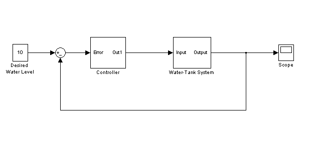
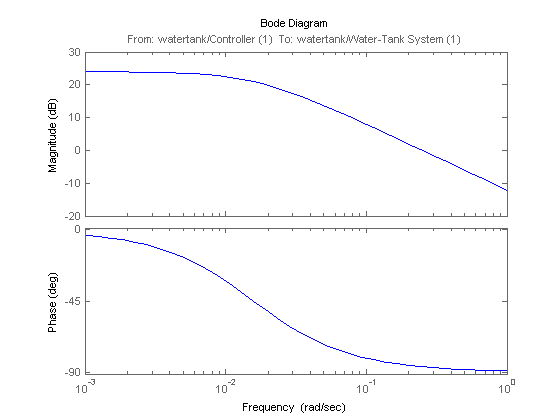

Linearization Command Line Introduction
The command line tools available in Simulink Control Design allow for the programmatic specification of the input and output points for the linearization of a model. Additionally, there are new command line tools to extract and specify operating points for a linearization. This demo introduces some of these commands by linearizing a water-tank feedback control system. An open loop linearized model of the watertank will be extracted at an operating point where the tank level is at H = 10. The following 3 steps linearize and analyze the water-tank model. 
The linearization points specify the inputs and outputs of a linearized model. To extract the open loop linearized model, add an input point at the output of the Controller block and an output point, with a loop opening, at the output of the Water-Tank System block.
% Open the modelwatertank% Specify the input point watertank_io(1)=linio('watertank/Controller',1,'in'); % Specify the output point with a loop opening watertank_io(2)=linio('watertank/Water-Tank System',1,'out','on');You can then set and view the linearization points in the model.
setlinio('watertank',watertank_io);Step 2: Computing and Specifying Operating Points
This next step involves finding an operating point of the Simulink model 'watertank' so that the level of the tank is at H = 10. One approach is to simulate the model then extract the operating point when the simulation is near the desired value. The command FINDOP will simulate a model and extract the operating points at times defined in the function call.
opsim = findop('watertank',10)findop: Adding a snapshot block to the model watertank and beginning simulation. findop: Snapshot block removed and returning snapshot. Operating Point for the Model watertank. (Time-Varying Components Evaluated at time t=10) States: ---------- (1.) watertank/Controller/Integrator x: 0.872 (2.) watertank/Water-Tank System/H x: 9.7 Inputs: NoneIn this operating point, H is not at the desired value of 10, it is at a value of 9.7. However, you can use this operating point to initialize a search for the desired operating point where H = 10. An operating point specification object allows you to specify the desired value of H = 10.
% Create an operating point specification object opspec = operspec('watertank'); % Create an output specification on the first output of the water tank block opspec = addoutputspec(opspec,'watertank/Water-Tank System',1); % Set the specification of H = 10 for the output opspec.Outputs.Known = 1; opspec.Outputs.y = 10; % Initialize the values of the states of the operating point specification % with the ones in the operating point opsim opspec = initopspec(opspec,opsim); % Search for the specified operating point using the FINDOP % function opss = findop('watertank',opspec);Operating Point Search Report: --------------------------------- Operating Point Search Report for the Model watertank. (Time-Varying Components Evaluated at time t=0) Operating condition specifications were successully met. States: ---------- (1.) watertank/Controller/Integrator x: 1.26 dx: 0 (0) (2.) watertank/Water-Tank System/H x: 10 dx: 0 (0) Inputs: None Outputs: ----------- (1.) watertank/Water-Tank System y: 10 (10)Step 3: Linearizing and Analyzing the Model
You are now ready to linearize the plant model by using the LINEARIZE function.
sys = linearize('watertank',opss,watertank_io);The resulting model is a state space object that you can analyze using any of the tools in the Control System Toolbox.
bode(sys);